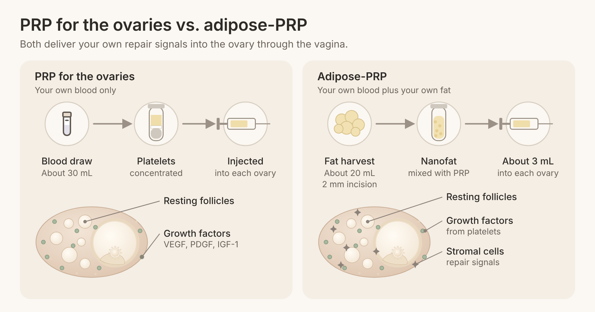
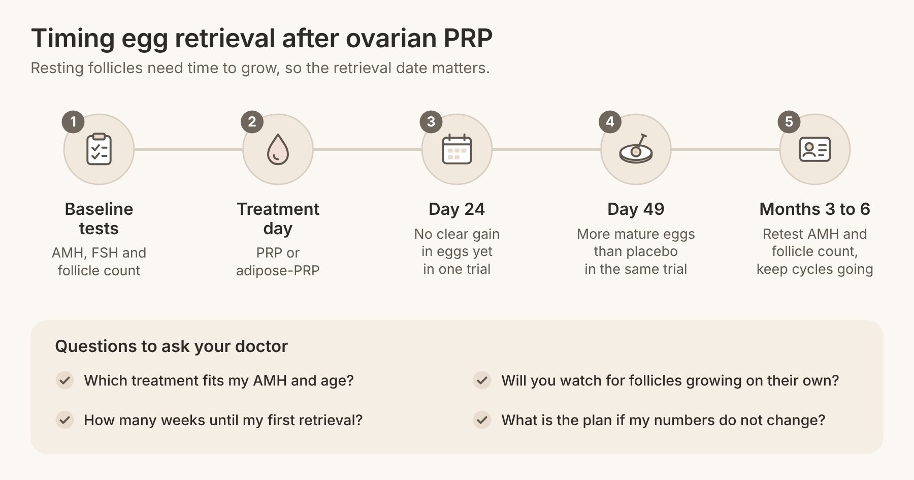

Quick answer: PRP for the ovaries and adipose-PRP both aim to wake up resting follicles in women with low ovarian reserve, and both have helped women conceive with their own eggs. Standard PRP uses only growth factors from your own blood; adipose-PRP adds a small amount of your own processed fat, which carries regenerative stromal cells, to the same PRP. Plain PRP in the ovaries is simpler and better studied, while adipose-PRP is newer and is designed for the hardest cases, such as women over 45 or those with very low AMH.
In this article
Both treatments put your own healing factors directly into the ovaries, and both are followed by IVF or natural trying in the months after. The difference is what goes into the syringe and who each one is designed for.
If you have been searching for answers, you have probably felt what one woman wrote in a patient forum: "I'm finding mixed reviews," and "the evidence doesn't seem to be that clear." That is a fair reading of the research, and it is exactly why the choice between these two options deserves a clear side-by-side view. Here is the summary, with detail in every section below.
| PRP for the ovaries | Adipose-PRP |
What is injected | Platelet-rich plasma from your own blood | Your own PRP mixed with processed fat (nanofat) |
Source material | About 30 mL of blood | About 30 mL of blood plus about 20 mL of fat |
Extra step | None | Fat taken through a 2 mm incision below the navel |
How it reaches the ovary | Ultrasound-guided needle through the vagina | Same route, about 3 mL into each ovary |
Strength of research | Two randomized trials and several meta-analyses | Early safety trial and first published live births |
Often suited to | Low AMH, poor response, under about 42 | Over 45, very low AMH, repeated failed cycles |
Neither option is a guarantee, and both work best as part of a planned IVF strategy. At Rejuvenating Fertility Center, both are offered through our PRP and adipose-PRP ovarian rejuvenation program, with no age cutoff and no weight cutoff.
PRP for the ovaries concentrates the platelets in your own blood and places them inside the ovary, where they release growth factors. The goal is to support blood flow and nudge dormant follicles (tiny sacs that each hold an immature egg) to start growing.
The process is short. A nurse draws a tube of your blood, which is spun in a centrifuge to separate the platelets from red cells. A 2025 critical review in Biomedicines describes how platelets release growth factors such as VEGF, PDGF and IGF-1, which are linked to new blood vessel growth and support for the cells around each egg. The same review notes that preparation methods still differ between clinics, which is one reason study results vary.
The concentrate is then injected into each ovary with a thin needle guided by vaginal ultrasound, the same route used for egg retrieval. Most women go home the same day. One patient described it as "very quick and much better than egg retrieval."
PRP does not create new eggs. You are born with all the follicles you will ever have, and many sit in a resting state. The theory behind PRP for the ovaries is that growth factors help more of those resting follicles become active, so more eggs are available to collect in the following months. If you want the full background, our guide to ovarian PRP and who it helps covers the basics in depth.
Adipose-PRP ovarian rejuvenation combines the same PRP with a small amount of your own fat tissue, processed into a very fine "nanofat" that is rich in stromal cells. Those cells release their own signals, so the ovary receives two sources of repair messages instead of one.
In the published method from our center, about 20 mL of fat is taken from the lower belly through a 2 mm incision below the navel, using local numbing fluid. The fat is concentrated and then emulsified into nanofat. It is mixed with PRP made from about 30 mL of blood, and roughly 3 mL of the mixture goes into each ovary through the vagina under IV sedation (Am J Stem Cells, 2025). No enzymes are used to process the fat.
Fat-derived stromal cells are thought to work mainly by sending signals rather than by turning into new ovarian tissue. According to the same report, they release growth factors, cytokines and tiny packets of genetic messages that may support new blood vessels, protect the cells around each egg and calm local inflammation. PRP adds its own growth factors on top. The idea is that the pair may do more together than either alone, which is why adipose-PRP is aimed at ovaries that need the strongest push.
Plain PRP has more research behind it, including two randomized trials, while adipose-PRP has early safety data and the first published live births in women over 45. Here is what each study found, in plain numbers.
Study | Who was treated | What changed | What it means for you |
1,418 patients across 15 studies (follicle counts) | Antral follicle count rose by 1.6; AMH rose 0.36 ng/ml at 3 months; live birth in 11% across 12 studies | Ovarian markers often move in the right direction | |
60 women with poor reserve, 3 retrievals each | 10.45 mature eggs with PRP vs. 8.91 with placebo | More eggs to work with over several retrievals | |
83 women under 38 with repeated low egg counts | 2.8 vs. 3.1 mature eggs at a retrieval about 28 days after PRP | Timing of retrieval may matter a great deal | |
9 women with premature ovarian failure, fat-derived cells only | No side effects over 12 months; 4 women resumed periods | Fat-derived cells look safe in the ovary | |
2 women aged 45 and 46, adipose-PRP | Two live births with their own eggs | The first published live births after adipose-PRP |

The largest pooled analysis found that after PRP in the ovaries, AMH rose and FSH fell, and the antral follicle count went up by 1.6 follicles on average. Across 12 studies with 1,482 patients, about 11% had a live birth, and about 7% conceived without IVF. The authors rated most of this evidence as low certainty because it came mainly from before-and-after studies without a control group.
The randomized trials add an important detail. In the Spanish double-blind trial, women who received PRP had more mature eggs across three retrievals, but the share of chromosomally normal (euploid) embryos and the pregnancy rate were not higher. In the PROVA trial, which retrieved eggs about 28 days after PRP, egg numbers did not change. That is why we read these results as useful guidance on how to use PRP well, not as a reason to skip it.
The adipose-PRP research is earlier-stage but encouraging. A phase I trial gave fat-derived stromal cells alone to 9 women with premature ovarian failure, found no early or late side effects, and saw 4 women resume periods. Building on that, our center published the first live births after combined adipose-PRP: one woman with an AMH of 0.29 ng/mL, who had been turned away by other clinics for her age, saw her antral follicle count rise from 2 to 14, conceived naturally about six months later and delivered at 47. The second woman, who had five failed IVF cycles elsewhere, produced a euploid embryo after treatment and delivered a healthy baby. This work was covered by Forbes.
Two cases cannot prove that adipose-PRP caused these births, and the authors say so. What they do show is that women over 45 with very low reserve can have a baby with their own eggs, which is the possibility RFC was built around.
The right choice depends on your age, your ovarian reserve and what has already happened in past cycles. These are the patterns we see most often.
You have low AMH or a low antral follicle count but still respond to stimulation.
You are roughly under 42 and want to add a step before your next IVF cycle.
You prefer the simplest procedure, with only a blood draw.
You have had a cycle with fewer eggs than expected, as in the trials above.
You are over 45, or your AMH is very low (for example, below 0.3 ng/mL).
You have had several IVF cycles with poor egg numbers or no usable embryos.
You have been told by another clinic that your only path is donor eggs, and you want to try with your own eggs first.
You have early ovarian insufficiency and want to explore every own-egg option. Our guide to premature ovarian insufficiency explains how to check whether your ovaries are still active.
Some women choose to run rejuvenation and a backup plan side by side. Donor eggs are a strong path in their own right; our donor program reports a 95% egg thaw survival rate and an 82% clinical pregnancy rate. Read how the donor eggs procedure works if you want to compare timelines.
No study has yet compared adipose-PRP and plain PRP head to head in women, so nobody can honestly say one works better for everyone. What the evidence does tell you is how to choose and how to time either one.
First, the treatments are designed for different starting points. Plain PRP has been tested mostly in women under about 42 who still make some eggs. Adipose-PRP was developed for women whose ovaries need more support, and its first published results come from women aged 45 and 46. If your reserve is very low, the stronger signal from fat-derived cells is the reason to consider it.
Second, timing appears to matter for both. A 2025 letter in Human Reproduction by the author of the double-blind trial pointed out that in his trial the first retrieval, at 24 days after PRP, showed no clear gain, while the second, at 49 days, did. The PROVA trial retrieved at about 28 days. Follicles take several months to grow from resting to ready, so a gap of 7 weeks or more before retrieval fits the biology better. In the adipose-PRP report, both women conceived about five to six months after treatment.
Third, more eggs are the measurable benefit; egg quality still depends mainly on age. That is why we often pair rejuvenation with mini IVF, which collects eggs gently over several cycles, and with embryo testing when it helps. Our article on improving egg quality after 40 covers the supporting steps.
Both treatments take a single visit, and the main planning question is when to schedule egg retrieval after it. Costs vary by clinic because neither treatment is covered by insurance in most plans as of 2026; see our pricing page for current RFC fees.
Step | PRP for the ovaries | Adipose-PRP |
Before treatment | AMH, FSH, antral follicle count | Same tests, plus a check of the belly area for the fat harvest |
Treatment day | Blood draw and injection, same-day visit | Blood draw, fat harvest and injection, same-day visit |
Recovery | Usually back to normal the next day | Mild belly soreness for a few days |
First retrieval | Often planned 7 weeks or more after | Monitored for growing follicles over 3 to 6 months |
Follow-up tests | Repeat AMH and follicle count | Repeat AMH and follicle count |
Get a current baseline. Ask for AMH, day 3 FSH and an antral follicle count. If your FSH is high, our guide to fertility treatment for high FSH explains what the number means.
Review your past cycles. Bring records of eggs retrieved, embryos made and any PGT-A results. These show whether you need more eggs, better-timed cycles or both.
Choose the treatment that matches your reserve. Plain PRP for moderate loss; adipose-PRP for very low AMH, age over 45 or repeated failed cycles.
Plan the IVF style. Many women do best with natural IVF or mini IVF after rejuvenation, banking eggs or embryos across cycles.
Retest and decide. Recheck AMH and follicle count in the months after treatment and use the results to set the retrieval schedule.
Which treatment fits my AMH, age and past cycle results, and why?
How many weeks after treatment will you plan my first retrieval?
Will you monitor me with ultrasound for follicles that start growing on their own?
What is the plan if my numbers do not change after the first treatment?

If you are over 45, our article on pregnancy at 45 walks through four real situations and the path that fits each.
PRP for the ovaries is an injection of platelet-rich plasma, made from your own blood, into each ovary under ultrasound guidance. Platelets release growth factors that may help resting follicles start to grow. It is usually planned several weeks to a few months before an IVF cycle.
Adipose ovarian PRP mixes your own PRP with a small amount of your own processed fat, called nanofat, which is rich in stromal cells. About 20 mL of fat is taken through a tiny incision, and roughly 3 mL of the combined mixture goes into each ovary. It is designed for women with very low reserve or those over 45.
Most of the change appears over several weeks to months, because follicles take several months to mature. In one randomized trial, the gain in eggs showed at a retrieval 49 days after PRP but not at 24 days. Women in the adipose-PRP report conceived about five to six months after treatment.
The current trials show more eggs, not a higher share of normal embryos per egg. Egg quality is tied mostly to age, so more eggs give you more chances to find a healthy embryo. Pairing treatment with gentle IVF and embryo testing makes the most of each egg.
Both procedures use the same vaginal route as egg retrieval and are done with sedation or numbing. Most women feel mild cramping for a day. Adipose-PRP adds a small belly incision that may be sore for a few days.
Yes. Many women come to RFC after hearing that, and we evaluate every own-egg option first, with no age cutoff and no weight cutoff. Donor eggs remain a strong choice you can return to at any time.
PRP for the ovaries is the simpler, better-studied option, and adipose-PRP is the newer approach built for the hardest cases. The best results come from matching the treatment to your reserve and timing your retrieval to give follicles enough time to grow. Both keep the door open to a baby with your own eggs.
At Rejuvenating Fertility Center, we specialize in cases other clinics turn away, and we were the first to publish live births after adipose-PRP in women over 45. If you are weighing PRP or adipose-PRP, book a consultation with our team and we will review your numbers and past cycles with you. Out-of-area patients can do monitoring close to home and travel to us for treatment.